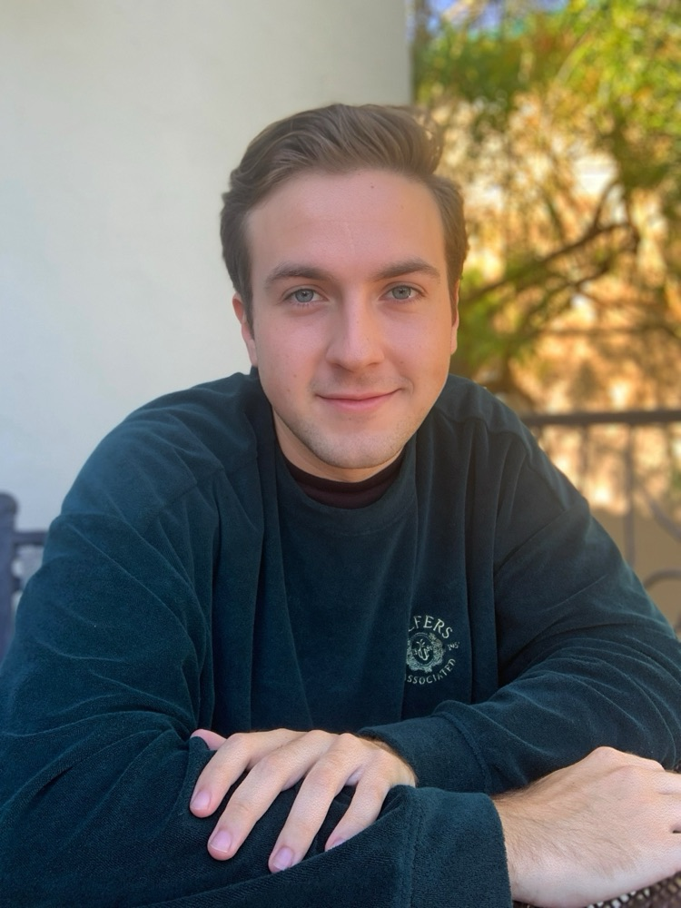
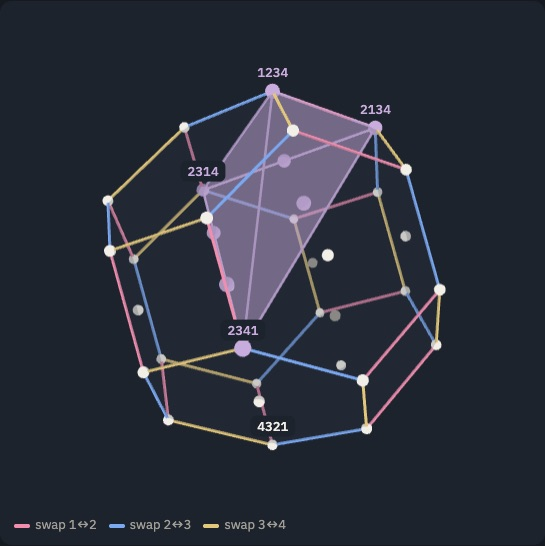

Carson Mitchell
Mathematics tutor, and author of a free textbook for the GRE mathematics test.
About

I graduated from UC Berkeley in 2023 with a bachelor's degree in mathematics. I formerly attended the University of Southern California as a PhD candidate in the mathematics department. I'm also a proud product of the community college system; I attended Santa Barbara City College, where I earned associate's degrees in math, physics, engineering, economics, and accounting.
I work mostly in combinatorics, logic, probability, and the philosophy of mathematics.
Away from math, I enjoy reading (especially books on math and philosophy), playing video games, listening to music, watching movies, going on walks with my dog Dexter, and going to the beach.
Here are a few examples of results I find particularly interesting and beautiful.
Ehrhart's theorem
Take a polytope whose corners all sit on integer points, and stretch it by a whole number \(t\). Count the integer points it contains. However strange the shape, that count is always a polynomial in \(t\), and its degree is the polytope's dimension.
So a count of separate points secretly knows the smooth geometry: the leading coefficient is the volume, the next is half the surface area, the constant term is always \(1\), and plugging in \(-t\) counts the points strictly inside.
The example: a permutahedron
Its 24 corners are the permutations of \(1234\), and two corners share an edge exactly when they differ by swapping two neighboring values; the edge colors show which swap. So walking along edges is sorting: each step up undoes one inversion, from \(4321\) at the bottom to \(1234\) at the top. Its edges are a picture of the symmetric group \(S_4\), generated by those swaps.
The faces come from the same idea. Each face holds the orderings that put the \(k\) smallest values in a chosen set of \(k\) positions. When \(k\) is \(1\) or \(3\), three values are left free to shuffle, in \(3! = 6\) ways, so the face is a hexagon: a smaller permutahedron. When \(k = 2\), the two smallest and the two largest values can each swap, in \(2 \cdot 2 = 4\) ways, so the face is a square. There are \(4 + 4 = 8\) ways to choose one or three positions and \(6\) to choose two, hence 8 hexagons and 6 squares.
Highlighted inside is the stack-sorting simplex of \(2341\), the simplex whose corners are traced by stack-sorting it: \(2341 \to 2314 \to 2134 \to 1234\). I study polytopes like this, generated from permutations of the form \(Ln1\) using the stack-sorting algorithm. This specific one has Ehrhart polynomial \((t+1)^3\), the same as the unit cube, lecture hall simplices, and many other well-studied geometric structures.

Gödel's Completeness and Incompleteness
Completeness says first-order proof captures exactly what is true in every model of a theory. Incompleteness says any consistent theory with computable axioms that is strong enough for arithmetic leaves some statements undecided.
The most striking part is independence: it can be proved that a statement has neither a proof nor a disproof. Not that nobody has found one yet, but that none can exist (as long as the axioms are consistent).
Completeness is what makes that possible to show. A statement is unprovable exactly when some model of the axioms makes it false, so proving independence means building two mathematical worlds, one where the statement holds and one where it fails. For the continuum hypothesis, Gödel built the first, where every set is constructible, and Cohen invented forcing to build the second. The usual axioms of set theory will never settle it.
The Banach–Tarski Paradox
Using the axiom of choice, a solid ball can be cut into five pieces and put back together as two balls, each the same size as the original.
Tutoring
Placeholder: not built yet.
Projects
Placeholder: not built yet. It opens with the GRE textbook: GRE textbook (PDF).
Contact
Placeholder: not built yet. Until then: carsonm6719@gmail.com.